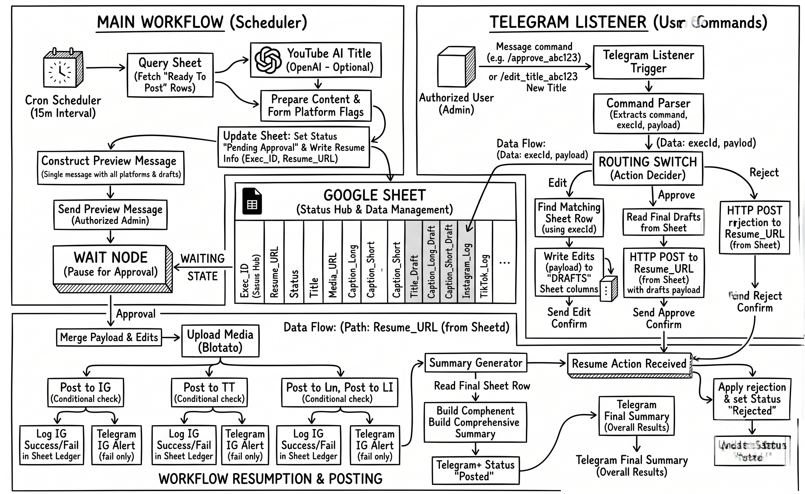

Workflow Architecture · n8n Social Posting Agent
Building a headless social media engine with human-in-the-loop Telegram control
Managing social media distribution across seven different platforms is a masterclass in friction. TikTok and X require snappy, compact text under strict character limits; LinkedIn and Instagram reward structured, long-form storytelling; YouTube Shorts demands curiosity-driven, punchy titles to capture click-through rates. Attempting to manage this manually results in hours lost to copy-pasting and formatting.
Most automation tools force a binary choice: either pay for expensive, rigid SaaS scheduling suites, or build headless scripts that broadcast content blindly without manual quality control. The posting agent solves this by decoupling scheduling from publishing. It uses Google Sheets as a stateful ledger, LangChain for real-time content adaptation, and a dual-workflow Telegram architecture that puts an interactive approval gate directly in your chat app.
The architecture — stateful orchestration without a database
Instead of standing up a dedicated PostgreSQL instance and a custom React frontend just to manage content queues, the posting agent leverages Google Sheets as an accessible, multi-user CRUD dashboard. Editors drop video links, draft captions, and select target platforms using simple checkboxes.

An automated cron trigger polls the sheet every 15 minutes, filtering specifically for rows where
Status == 'Ready To Post' and the timestamp has matured. Once picked up, the workflow
transitions the row state to prevent duplicate processing and writes critical execution
metadata—specifically the instance Exec_ID and the asynchronous
Resume_URL—back into the sheet.
// Filter By Schedule (n8n Code Node)
const items = $input.all();
const now = new Date();
const valid = items.filter(item => {
const scheduledTime = item.json.Scheduled_At;
if (!scheduledTime || scheduledTime.toString().trim() === '') return true;
return new Date(scheduledTime) <= now;
});
if (!valid.length) return [];
return [valid[0]]; // Process strictly one row per execution tick to guarantee idempotency
Storing the Resume_URL directly in the spreadsheet ledger transforms a static row into
an addressable state machine. External systems can inspect the sheet, locate the webhook endpoint
for a paused post, and wake up sleeping execution threads on demand.
Human-in-the-loop control via asynchronous Telegram webhooks
True automation requires knowing when not to automate. Rather than broadcasting unverified
AI-generated content, the Main Workflow halts execution immediately after preparing the content
payloads. It constructs a rich markdown preview of the captions, platform targets, and AI-optimized
titles, pushes it to an authorized Telegram chat, and enters an asynchronous Wait Approval
state.
To handle interactions without polling or timeouts, a second decoupled workflow—the **Telegram Listener**—acts as a persistent command gateway:
chatId matches the admin authorization
whitelist before processing regex command strings./edit_title_abc123 New Title extract the alphanumeric execId,
performing a lookup against the Google Sheet to locate the exact row currently paused in
execution.Title_Draft, Caption_Long_Draft) and confirms the save via
chat.Resume_URL.
// Command Parser — Router & Security Layer
const ADMIN_CHAT_ID = 'YOUR_TELEGRAM_CHAT_ID';
const msg = $input.first().json;
const chatId = String(msg.message?.chat?.id || '');
const text = (msg.message?.text || '').trim();
if (chatId !== ADMIN_CHAT_ID) return []; // Drop unauthorized traffic silently
// Match pattern: /command_execId optional_payload
const re = /^\/(approve|reject|edit_title|edit_long|edit_short)_([a-zA-Z0-9]+)(?:\s+([\s\S]+))?$/;
const match = text.match(re);
if (!match) return [{ json: { command: 'unknown', execId: '', payload: '', chatId } }];
return [{ json: {
command: match[1], // approve | reject | edit_title | edit_long | edit_short
execId: match[2], // Unique workflow execution identifier
payload: (match[3] || '').trim(),
chatId
}}];
Content adaptation & multi-platform fan-out
Once the wake-up webhook fires, the Main Workflow resumes execution. If the action was a rejection, it
marks the ledger as Rejected and terminates cleanly. If approved, it dynamically overwrites
the baseline content with any custom drafts submitted during the review pause, clears the scratchpad
columns, and begins media syndication.
To satisfy platform-specific formatting rules without creating duplicate database records, content adaptation happens on the fly during data preparation:
- AI Title Generation: If the YouTube flag is
checked, the workflow feeds the base title into a LangChain OpenAI node running
gpt-4o-miniwith a strict system prompt designed to maximize curiosity while capping output at 100 characters. - Intelligent Truncation: The system maps full-length storytelling copy to Instagram, Facebook, and LinkedIn, while automatically generating a fallback 280-character substring for TikTok, Threads, and X if an explicit short caption wasn't provided.
- Concurrent API Syndication: A Blotato media node downloads the video binary directly from Google Drive using the extracted file ID, hosting it on a CDN to dispatch parallel API requests across all selected social networks.
Engineering War Stories: what broke and how it was fixed
Eliminating webhook race conditions using scratchpad draft columns
In the initial prototype, when an admin sent an edit command via Telegram, the listener attempted to
directly update the primary content columns (e.g., Title, Caption_Long) in
the sheet while the main workflow was suspended. However, if an admin sent two rapid edits followed
immediately by `/approve`, the main workflow would occasionally resume and read the sheet before
Google's API had fully committed the second write operation, publishing stale content.
I resolved this by decoupling real-time edits from permanent records. The Telegram Listener now
writes exclusively to isolated draft columns (Title_Draft,
Caption_Long_Draft). When `/approve` is triggered, the listener reads these draft
values and bundles them directly into the JSON body of the resume POST webhook. The Main Workflow
relies entirely on the webhook payload to apply edits in memory, completely bypassing the need for a
synchronous, pre-publish sheet read.
Isolating platform failures to prevent cascade crashes during syndication
Social media APIs are notoriously unstable. Early in testing, a temporary token expiration on the X (Twitter) API would throw an unhandled exception during the fan-out phase. Because the publishing nodes were executed sequentially without error containment, an X API failure would immediately abort the entire execution thread, preventing the video from being published to YouTube or LinkedIn even though those credentials were perfectly valid.
I restructured the fan-out layer using isolated conditional branches paired with Blotato nodes
configured with explicit error tolerance (onError: "continueErrorOutput" and automated
3x retry policies with 30-second exponential backoffs). Each platform branch now operates as a
closed loop that writes its own localized status back to the sheet (e.g.,
Instagram_Log: "✅ Success" vs X_Log: "❌ Failed") and triggers a targeted
Telegram alert if all retries fail, allowing the rest of the syndication matrix to finish
uninterrupted.
Replacing cron polling with event-driven database triggers
While polling a Google Sheet on a 15-minute interval is highly resilient and requires zero infrastructure maintenance, it introduces an artificial latency floor. A video scheduled for 2:01 PM will sit idle in the ledger until the cron scheduler triggers at 2:15 PM.
The planned architectural upgrade involves migrating the primary ledger from Google Sheets to a
Supabase PostgreSQL instance. By leveraging Supabase Database Webhooks, the system will listen for
INSERT or UPDATE events where status == 'Ready To Post',
dispatching the execution payload immediately to the n8n webhook gateway. This removes the cron
scheduler entirely, reducing publish latency from up to 15 minutes down to sub-second real-time
execution while cutting background compute cycles by over 90%.